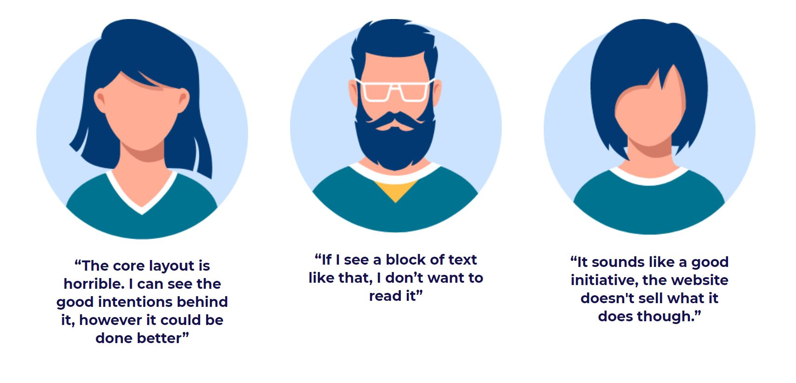
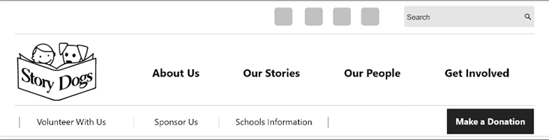
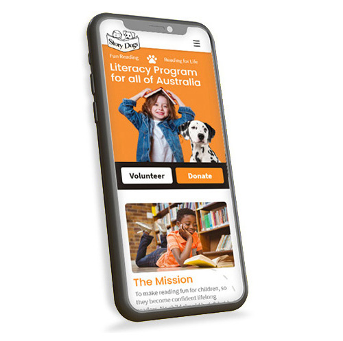

INTRODUCTION
THIS CASE STUDY is a fictional project that we embarked on as students to redesign a not for profit organisation's website. We chose Story Dogs for this assignment because when we discovered their website we not only fell in love with the adorable dogs, but also the Story Dog mission.
STORY DOGS is a wonderful not-for-profit organization that helps over 2400 children across Australia each week. Their program focuses on building reading and literacy confidence in primary age students by having them read to dogs.
The goal of this project was to update the Story Dogs website to create a better user experience while maintaining the feelings of warmth and joy the current website provides. The website has a large and unwieldy navigation system that appears to have grown out of control as the organisation has expanded, and an overwhelming amount of content that seems like a barrier to attracting potential new volunteers.
THE PROCESS
MEET THE USER
This is Sue, Sue is a retired teacher who is passionate about education. She enjoys the freedom of retirement but is not ready to give up her connection to education. Sue wants to feel useful and wants to use her skills and experience to give back to the community. Sue is a dog lover, she has a Irish wolfhound named Molly, whom she adores
SUE'S STORY
Sue heard about story dogs wants to register herself and Molly as volunteers. Sue is passionate about childhood literacy and she knows that filling her spare time by helping others is a good way to stay connected and involved in the local community. She feels this will create a more fulfilling life and ultimately improve her health and happiness
How might we help users connect with Story dogs to find everything they need to know about becoming a volunteer, in a way that is easy and hassle free, giving users a pleasant and memorable user experience making them feel happy, confident and excited about volunteering.
THE KEY ISSUES
User tests and heuristic evaluation revealed issues with content organisation and navigation. A lack of information hierarchy, particularly on the homepage and an overwhelming and unconventional navigation system needed to be addressed. Users also had difficulty locating key information due to excessive text and poor content layout.
During user testing we found that although users felt a positive energy from the website. They said...

THE SOLUTION
We needed to create an interface so that users like Sue, who may not be the most confident technology users, can connect with the Story dogs website in a way that is easy and hassle free, creating a pleasant and memorable user experience to feel happy, confident and excited about volunteering.
REDESIGN PRIORITIES
Overhaul the information architecture
Reorganise the primary and secondary navigation system
Strive for a clearer page layout
Create a consistent and accessible design system for the website to follow, including buttons
NAVIGATION REDESIGN
We prototyped two new versions of the navigation system, firstly a flat navigation system, without drop downs, and a more traditional drop-down navigation system, then A/B tested them to determine which would be more user friendly and intuitive to navigate.

Version A
Version B
FINDINGS
The testing identified pros and cons with both systems which led us to amalgamating the designs and functions. The result was a single row, flat navigation system, which limits choice and helps users narrow down what they would like to search for, with secondary navigation below that affords a very clean and easy to navigate layout.

Two level flat navigation system
WIREFRAMING
When designing the wireframes the main objective was to simplify the content and make it more digestible by using imagery to break up the blocks of text.

Wireframes to high fidelity mock-ups
During the process of taking wireframes through mid fidelity to high fidelity we did frequent informal 5-second testing and sought feedback from external reviews.

The look and feel of the new design was kept very clean and fresh to make the site feel light, bright and easy to digest. A simple colour palette of story dogs orange with a suite of neutral colours was devised to maintain the warm feeling users experienced from Story Dogs and we selected lovely, human centred, photos of the children, the dogs and the volunteers which we paired with some more graphic stock photography. A dotted line to draw the users eye down the page through the content adds a playful feature to increase the feeling of happiness users gain from volunteering, donating or giving back in some way.